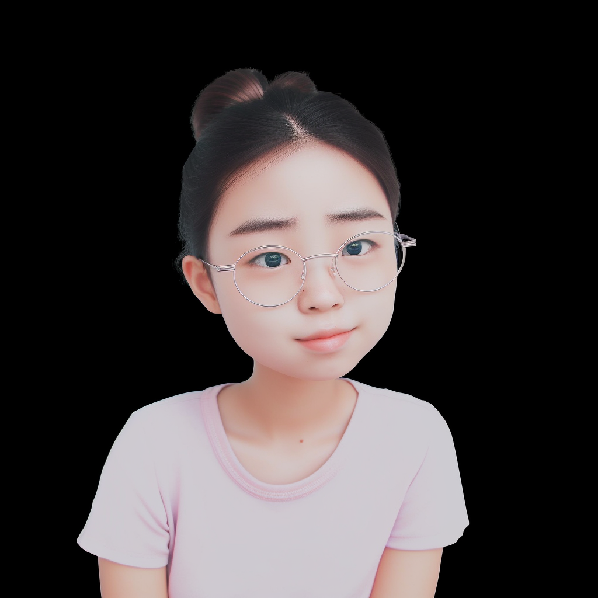
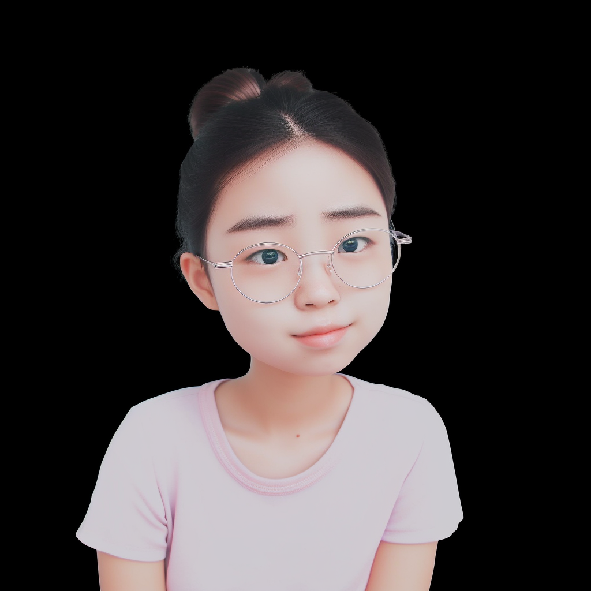

I am broadly interested in sensing, deep learning, ubiquitous computing, and their applications in digital healthcare systems, cyber-physical systems, and next-generation AIoT systems.
I am open to collaborations and discussions on these areas, drop me an email if you are interested in working together:
LLMs+CPS: LLMs and its applications in cyber-physical systems, mobile computing and human-computer interaction.
AI+Wireless: Wireless Sensing, Wireless Communication, CSI Feedback, Semantic Communication, and ISAC.
Multimodal/Embodied AI: Multimodal sensor data fusion and reasoning, robotics and autonomous systems
In addition, if you are a student from underrepresented groups or in need, you can fill out this form. I'm more than willing to chat about research, grad school, or anything else to offer assistance to the best of my ability.
News
[12/24] Invited to serve as FMSys 2025 TPC and CoNEXT'25 Shadow TPC. Welcome to submit papers!
[11/24] Invited to serve as HumanSys 2025 General co-Chair. Welcome to submit papers!
[10/24] Invited to serve as MobiSys 2025 TPC. Welcome to submit papers!
[07/24] Give an invited talk at Peking University.
[07/24] RS-BNN is accepted by IEEE TVT.
[06/24] Invited to serve as a TPC member for ICPADS'24, and serve as a session chair for ICDCS'24, see you in NYC!
[ICASSP 2024] Predicting Adverse Events for Patients with Type-1 Diabetes via Self-supervised Learning
Xinzhe Zheng, Sijie Ji, Chenshu Wu
[ICC 2023] JPTS: Enhancing Deep Learning Performance of Massive MIMO CSI Feedback Sijie Ji, Mo Li
[CVPRW 2020] Multiple Transfer Learning and Multi-Label Balanced Training Strategies for Facial AU Detection in the Wild Sijie Ji, Kai Wang, Xiaojiang Peng, Jianfei Yang, Zhaoyang Zeng, Yu Qiao
[MM 2020] Attention-driven Unsupervised Image Retrieval for Beauty Products with Visual and Textual Clues
Jingwen Hou, Sijie Ji*, Annan Wang^
[ICCVW 2021] Improving Representation Consistency with Pairwise Loss for Masked Face Recognition
Hanjie Qian, Panpan Zhang, Sijie Ji, Shuxin Cao, Yuecong Xu
[IET Radar 2023] (excellent paper award) Joint Location Design and Resource Allocation for Integrated Sensing and Semantic Communication
Yuanhao Cui, Weijie Yuan, Sijie Ji*, Hongming Zhang, Fan Liu, Zhaohui Yang, Zhouyi Wu
[DSP 2024] Robust Target Detection of Intelligent Integrated Optical Camera and mmWave Radar System
Chen Zhu, Zhouxiang Zhao, Zejing Shan, Lijie Yang, Sijie Ji, Zhaohui Yang, Zhaoyang Zhang
[IEEE TVT] RS-BNN: A Deep Learning Framework for the Optimal Beamforming Design of Rate-Splitting Multiple Access
Yiwen Wang, Yijie Mao, Sijie Ji
IEEE Internet of Things Journal, IEEE Transactions on Mobile Computing,
ACM/IEEE Transactions on Networking,
ACM Transactions on Internet of Things, IEEE Transactions on Vehicular Technology,
IEEE Transactions on Wireless Communications, IEEE Transactions on Communications, IEEE Communications Letters, IEEE Wireless Communications Letters
Services:
Session Chiar: VTC Fall 2023, ICDCS'24 Teaching Assistant(TA):
CE3005 Computer Networks 2019-2021
CZ3006 Net-Centric Computing AY20/21 (the head of TAs) Final Year Projects (FYP) Mentor:
Hao Zhe Lim, 2019
Argota Timothy John Tee, 2020
Annan Wang, 2020
Yupeng Huang, 2021
Xuanye Zhang, 2022
Awards & Honors
Scholarship:
NTU Research Scholarship, 2018-2022
National Encouragement Scholarship, 2016
Outstanding Student Scholarship, 2013/2015
Janpan Infotec Inc Aunual Scholarship, 2014 Lu Jiaxi Scholarship, 2012
Competition:
2nd Place, Masked Face Recognition Challenge, ICCV21
Silver Medal, Indoor Location Competition 2.0, Kaggle, 2021
Final list(7/1736), AI+Wireless National Artificial Intelligence Competition, 2020
Bronze Medal Award, AI Meets Beauty Challenge, MM2020
Third Place, EmotioNet Challenge, CVPR2020
Third Prize, "Challenge Cup" National College Student Academic Competition, 2017
Second Prize, International Undergraduate Mathematical Contest in Modeling, 2017
Second Prize, International Undergraduate Interdisciplinary Contest in Modeling, 2016
Third Prize, China Undergraduate Mathematical Modeling Competition, 2016
Second Prize, "Challenge Cup" National College Student Business Plan Competition, 2016
Honorable Mention, China "Internet+" College Students Innovation and Entrepreneurship Competition, 2016
Honorable Mention, Asia Region, The 39th International Collegiate Programming Contest, 2014
Silver Medal, China Adolescents Science & Technology Innovation Contest(CASTIC), 2011 Honor:
CPS Rising Star, 2024
Excellent Paper Award, IET Radar 2023
N2Women Young Researcher Fellowship, SenSys 2023
Singapore 100 Women in Tech, 2023
SenSys Travel Grant, 2022
Excellent Bachelor Thesis, ECNU
Excellent Student Cadre, ECNU
The Most Outstanding Collaboration Awards, NTU
I am a dancer and trader
Dance and the community it fosters have shaped me as a person.
 
